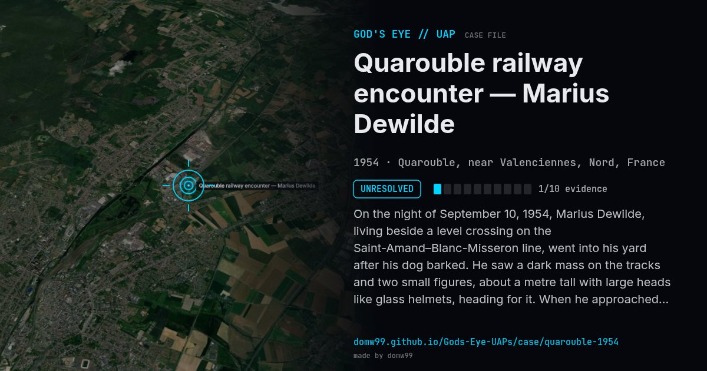

Quarouble railway encounter — Marius Dewilde

On the night of September 10, 1954, Marius Dewilde, living beside a level crossing on the Saint-Amand–Blanc-Misseron line, went into his yard after his dog barked. He saw a dark mass on the tracks and two small figures, about a metre tall with large heads like glass helmets, heading for it. When he approached, a bright light left him unable to move; the object rose and vanished to the west. Air police inspectors found symmetrical dents in the wooden sleepers at five places and displaced ballast, and one of them said the marks might fit landing struts. It became one of the best-known cases of the 1954 wave of sightings in France.
Explanation
The marks on the sleepers were real, and an investigator thought they could be landing struts. But there was one witness, who had suffered a head injury the year before and later had nervous disorders, and the air police and gendarmes found no footprints or other proof.
What was seen
Shape: Dark mass on the railway with two or more small figures
Witnesses: Marius Dewilde, a 34-year-old metalworker
Duration: Minutes